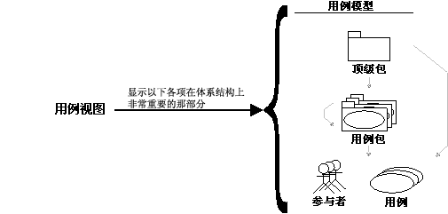

| 概念：用例视图 |
 |
|
关系
主要描述
|
若要提供计划迭代的技术内容的基础，一个称为用例视图的体系结构视图将用于以下需求规程。系统只有一个用例视图，说明用例和场景，用例和场景包含对体系结构有重要意义的行为、类或技术风险。用例视图在每次迭代中进行初始优化和考虑。  用例视图显示对体系结构很重要的用例模型子集、用例和参与者子集。 需求活动后的分析、设计和实施活动以体系结构的概念为中心。该体系结构的产生和验证是早期迭代的重点，特别是在精化阶段。体系结构由许多不同的体系结构视图来表示，这些视图实际上是说明“对体系结构有重要意义”模型元素的选萃。 还有其他四个视图：逻辑视图、流程视图、部署视图和实施视图。这些视图在分析与设计和实施规程中进行处理。 这些体系结构视图记录在软件体系结构文档中。可以添加不同的视图（例如安全视图）来说明软件体系结构的其他特定方面。 所以，体系结构视图在本质上可以视为构建的模型的抽象或者简化，在这里您不显示详细信息，从而使重要特征更加明显。对于提高在系统开发过程中构建的任何模型的质量，体系结构是一种重要的方法。 |
© Copyright IBM Corp. 1987, 2006. All Rights Reserved. |